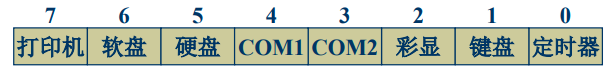
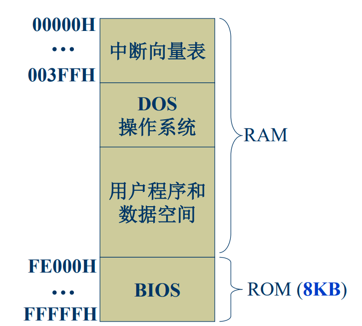
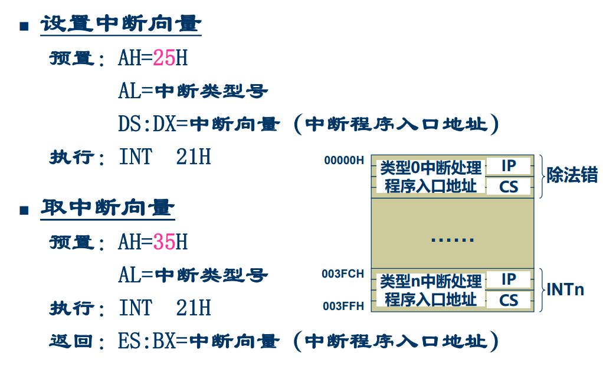

汇编语言8：输入输出程序设计
tips：本文不涉及完全的知识梳理，只是个人向的易错点记录
为什么使用DMA方式：
- 减少大批量数据传输时的cpu的开销
- 解决高速IO设备可能丢失数据问题，满足IO数据交换速度要求
DMA方式数据传输特点：
- 以数据块为单元
- 主要用于高速的IO设备
- IO和CPU竞争使用寄存器
DMA数据传送控制过程：
- 数据传输前，CPU对DMA控制器中控制寄存器初始化
- DMA控制器控制设备与存储器直接进行块数据交换
- 数据传送结束后，CPU进行后处理
SOUND子程序：
注意点：
- 先将最后两位置零
- XOR AL, 00000010B
1
2
3
4
5
6
7
8
9
10
11
12
13
14
15
16
17
18
19
20
21
22
23
24
25
26
27
28
29
30
31
32
33
34
35
36
37
38
39
40
41
42
43
44
45
46
47
48title final3
data segment
data ends
stack segment at 0A000h
dw 128 dup(0)
tos label word
stack ends
code segment
assume ds:data, cs:code, ss:stack
main proc far
mov ax, stack
mov ss, ax
mov sp, offset tos
mov cx, 1000
mov bx, 9000
call sound
mov ax, 4c00h
int 21h
main endp
sound proc near
push ax
push dx
mov dx, cx
in al, 61h
and al, 11111100B
trig:
xor al, 00000010B
out 61h, al
mov cx, bx
delay:
loop delay
dec dx
jne trig
pop dx
pop ax
ret
sound endp
code ends
end main8259A的中断屏蔽寄存器

1
2MOV AL, 11111101B
OUT 21H, AL软件中断类型：
- 程序中的中断指令
- CPU的某些运行结果
- 调试程序设置的中断
X86内存分配

设置中断向量&取中断向量：

中断过程：
中断响应
CPU自动完成如下操作：
- 取中断类型号
- 标志寄存器入栈
- CS、IP入栈
- IF、TF置零
- 转中断服务处理程序入口地址：
- 从中断向量表中取4*N单元的字内容 送 IP
- 从中断向量表中取4*N + 2单元的字内容 送 CS
中断处理
中断返回
一般中断处理程序设计格式：
- 保存现场
- 开中断
- 中断处理程序主体部分
- 中断结束
- 关中断
- 恢复现场
- 中断返回（IRET）
1CH中断使用示例：
1
2
3
4
5
6
7
8
9
10
11
12
13
14
15
16
17
18
19
20
21
22
23
24
25
26
27
28
29
30
31
32
33
34
35
36
37
38
39
40
41
42
43
44
45
46
47
48
49
50
51
52
53
54
55
56
57
58
59
60
61
62
63
64
65
66
67
68
69
70
71
72
73
74
75
76
77
78
79
80
81
82
83
84
85
86
87
88
89
90
91
92
93
94
95
96
97
98
99
100
101
102
103
104
105
106
107
108title final4
data segment
count dw 1
msg db 'The bell is ringing', 0dh, 0ah, '$'
data ends
stack segment at 0A000h
dw 128 dup(0)
tos label word
stack ends
code segment
assume ds:data, cs:code, ss:stack
main proc far
mov ax, stack
mov ss, ax
mov sp, offset tos
mov ax, data
mov ds, ax
; mov dx, offset msg
; mov ah, 09h
; int 21h
mov al, 1ch
mov ah, 35h
int 21h
push es
push bx
push ds
mov dx, offset ring
mov ax, seg ring
mov ds, ax
mov al, 1ch
mov ah, 25h
int 21h
pop ds
in al, 21h
and al, 11111110b
out 21h, al
sti
mov di, 20000
delay:
mov si, 30000
delay1:
dec si
jnz delay1
dec di
jnz delay
cli
pop dx
pop ds
mov al, 1ch
mov ah, 25h
int 21h
mov ax, 4c00h
int 21h
main endp
ring proc near
push ds
push ax
push cx
push dx
mov ax, data
mov ds, ax
sti
dec count
jne exit
mov dx, offset msg
mov ah, 09h
int 21h
mov dx, 100
in al, 61h
and al, 0fch
sound:
xor al, 2
out 61h, al
mov cx, 1400h
wait1:
loop wait1
dec dx
jne sound
mov count, 182
exit:
cli
pop dx
pop cx
pop ax
pop ds
iret
ring endp
code ends
end main